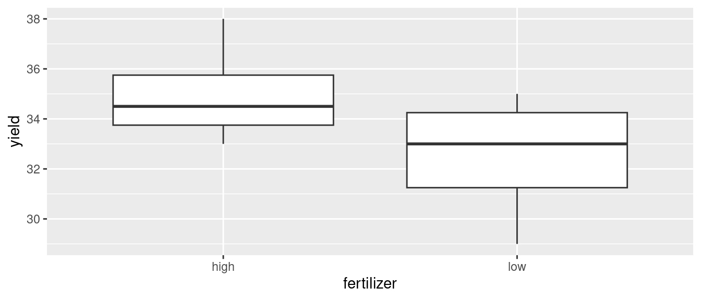
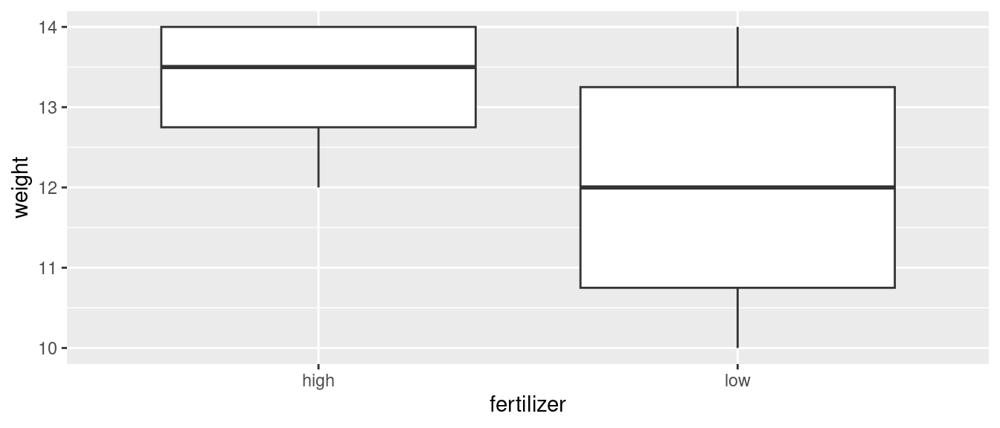
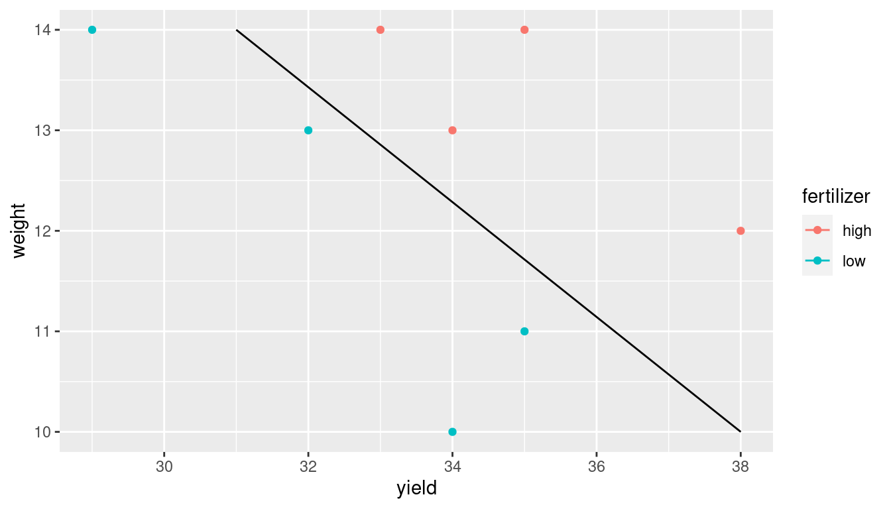
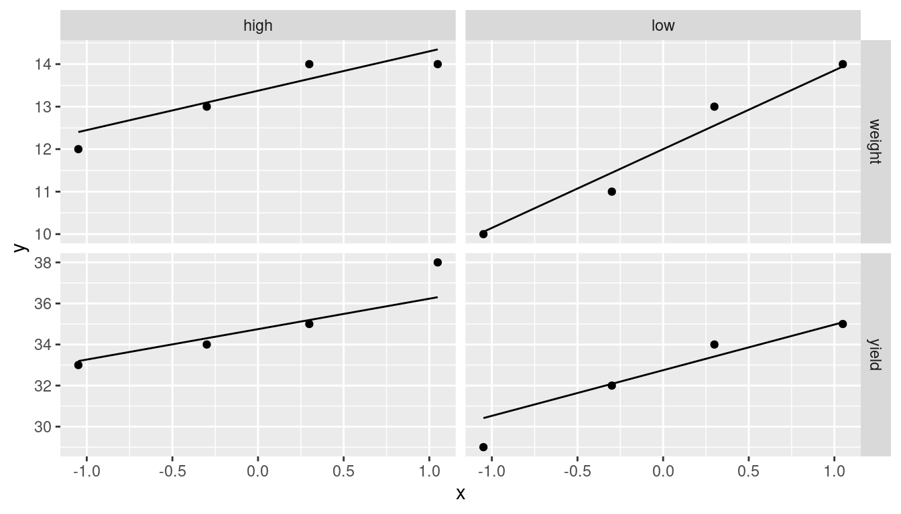

library(car) # may need to install first
library(tidyverse)
library(MVTests) # also may need to installMultivariate Analysis of Variance
Multivariate analysis of variance
Standard ANOVA has just one response variable.
What if you have more than one response?
Try an ANOVA on each response separately.
But might miss some kinds of interesting dependence between the responses that distinguish the groups.
Packages
Small example
Measure yield and seed weight of plants grown under 2 conditions: low and high amounts of fertilizer.
Data (fertilizer, yield, seed weight):
url <- "http://ritsokiguess.site/datafiles/manova1.txt"
hilo <- read_delim(url, " ")Rows: 8 Columns: 3
── Column specification ────────────────────────────────────────────────────────
Delimiter: " "
chr (1): fertilizer
dbl (2): yield, weight
ℹ Use `spec()` to retrieve the full column specification for this data.
ℹ Specify the column types or set `show_col_types = FALSE` to quiet this message.- 2 responses, yield and seed weight.
The data
hilo# A tibble: 8 × 3
fertilizer yield weight
<chr> <dbl> <dbl>
1 low 34 10
2 low 29 14
3 low 35 11
4 low 32 13
5 high 33 14
6 high 38 12
7 high 34 13
8 high 35 14Boxplot for yield for each fertilizer group
ggplot(hilo, aes(x = fertilizer, y = yield)) + geom_boxplot()
Yields overlap for fertilizer groups.
Boxplot for weight for each fertilizer group
ggplot(hilo, aes(x = fertilizer, y = weight)) + geom_boxplot()
Weights overlap for fertilizer groups.
ANOVAs for yield and weight
hilo.y <- aov(yield ~ fertilizer, data = hilo)
summary(hilo.y) Df Sum Sq Mean Sq F value Pr(>F)
fertilizer 1 12.5 12.500 2.143 0.194
Residuals 6 35.0 5.833 hilo.w <- aov(weight ~ fertilizer, data = hilo)
summary(hilo.w) Df Sum Sq Mean Sq F value Pr(>F)
fertilizer 1 3.125 3.125 1.471 0.271
Residuals 6 12.750 2.125 Neither response depends significantly on fertilizer. But…
Plotting both responses at once
- Have two response variables (not more), so can plot the response variables against each other, labelling points by which fertilizer group they’re from.
- First, create data frame with points \((31,14)\) and \((38,10)\) (why? Later):
d <- tribble(
~line_x, ~line_y,
31, 14,
38, 10
)- Then plot data as points, and add line through points in
d:
ggplot(hilo, aes(x = yield, y = weight,
colour = fertilizer)) + geom_point() +
geom_line(data = d,
aes(x = line_x, y = line_y, colour = NULL)) -> gThe plot

MANOVA finds multivariate differences
- Is difference found by diagonal line significant? MANOVA finds out.
response <- with(hilo, cbind(yield, weight))
hilo.1 <- manova(response ~ fertilizer, data = hilo)
summary(hilo.1) Df Pillai approx F num Df den Df Pr(>F)
fertilizer 1 0.80154 10.097 2 5 0.01755 *
Residuals 6
---
Signif. codes:
0 '***' 0.001 '**' 0.01 '*' 0.05 '.' 0.1 ' ' 1- Yes! Difference between groups is diagonally, not just up/down (weight) or left-right (yield). The yield-weight combination matters.
Strategy
Create new response variable by gluing together columns of responses, using
cbind.Use
manovawith new response, looks likelmotherwise.With more than 2 responses, cannot draw graph. What then?
If MANOVA test significant, cannot use Tukey. What then?
Use discriminant analysis (of which more later).
Another way to do MANOVA
using Manova from package car:
hilo.2.lm <- lm(response ~ fertilizer, data = hilo)
hilo.2 <- Manova(hilo.2.lm)
summary(hilo.2)
Type II MANOVA Tests:
Sum of squares and products for error:
yield weight
yield 35 -18.00
weight -18 12.75
------------------------------------------
Term: fertilizer
Sum of squares and products for the hypothesis:
yield weight
yield 12.50 6.250
weight 6.25 3.125
Multivariate Tests: fertilizer
Df test stat approx F num Df den Df Pr(>F)
Pillai 1 0.801542 10.09714 2 5 0.017546 *
Wilks 1 0.198458 10.09714 2 5 0.017546 *
Hotelling-Lawley 1 4.038855 10.09714 2 5 0.017546 *
Roy 1 4.038855 10.09714 2 5 0.017546 *
---
Signif. codes: 0 '***' 0.001 '**' 0.01 '*' 0.05 '.' 0.1 ' ' 1Comments
Same result as small-m
manova.Manovawill also do repeated measures, coming up later.
Assumptions
- normality of each response variable within each treatment group
- this is actually multivariate normality, with correlations
- equal spreads: each response variable has same variances and correlations (with other response variables) within each treatment group. Here:
- yield has same spread for low and high fertilizer
- weight has same spread for low and high fertilizer
- correlation between yield and weight is same for low and high fertilizer
- test equal spread using Box’s \(M\) test
- a certain amount of unequalness is OK, so only a concern if P-value from \(M\)-test is very small (eg. less than 0.001).
Assumptions for yield-weight data
For normal quantile plots, need “extra-long” with all the data values in one column:
hilo %>%
pivot_longer(-fertilizer, names_to = "xname",
values_to = "xvalue") %>%
ggplot(aes(sample = xvalue)) + stat_qq() +
stat_qq_line() +
facet_grid(xname ~ fertilizer, scales = "free") -> gThere are only four observations per response variable - treatment group combination, so graphs are not very informative (over):
The plots
g
Box M test
- Make sure package
MVTestsloaded first. - inputs:
- the response matrix (or, equivalently, the response-variable columns from your dataframe)
- the column with the grouping variable in it (most easily gotten with
$).
hilo %>% select(yield, weight) -> numeric_values
summary(BoxM(numeric_values, hilo$fertilizer)) Box's M Test
Chi-Squared Value = 1.002964 , df = 3 and p-value: 0.801 - No problem at all with unequal spreads.
Another example: peanuts
Three different varieties of peanuts (mysteriously, 5, 6 and 8) planted in two different locations.
Three response variables:
y,smkandw.
u <- "http://ritsokiguess.site/datafiles/peanuts.txt"
peanuts.orig <- read_delim(u, " ")Rows: 12 Columns: 6
── Column specification ────────────────────────────────────
Delimiter: " "
dbl (6): obs, location, variety, y, smk, w
ℹ Use `spec()` to retrieve the full column specification for this data.
ℹ Specify the column types or set `show_col_types = FALSE` to quiet this message.The data
peanuts.orig# A tibble: 12 × 6
obs location variety y smk w
<dbl> <dbl> <dbl> <dbl> <dbl> <dbl>
1 1 1 5 195. 153. 51.4
2 2 1 5 194. 168. 53.7
3 3 2 5 190. 140. 55.5
4 4 2 5 180. 121. 44.4
5 5 1 6 203 157. 49.8
6 6 1 6 196. 166 45.8
7 7 2 6 203. 166. 60.4
8 8 2 6 198. 162. 54.1
9 9 1 8 194. 164. 57.8
10 10 1 8 187 165. 58.6
11 11 2 8 202. 167. 65
12 12 2 8 200 174. 67.2Setup for analysis
peanuts.orig %>%
mutate(
location = factor(location),
variety = factor(variety)
) -> peanuts
response <- with(peanuts, cbind(y, smk, w))
head(response) y smk w
[1,] 195.3 153.1 51.4
[2,] 194.3 167.7 53.7
[3,] 189.7 139.5 55.5
[4,] 180.4 121.1 44.4
[5,] 203.0 156.8 49.8
[6,] 195.9 166.0 45.8Analysis (using Manova)
peanuts.1 <- lm(response ~ location * variety, data = peanuts)
peanuts.2 <- Manova(peanuts.1)
summary(peanuts.2)
Type II MANOVA Tests:
Sum of squares and products for error:
y smk w
y 104.205 49.365 76.480
smk 49.365 352.105 121.995
w 76.480 121.995 94.835
------------------------------------------
Term: location
Sum of squares and products for the hypothesis:
y smk w
y 0.7008333 -10.6575 7.129167
smk -10.6575000 162.0675 -108.412500
w 7.1291667 -108.4125 72.520833
Multivariate Tests: location
Df test stat approx F num Df den Df Pr(>F)
Pillai 1 0.893484 11.18432 3 4 0.020502 *
Wilks 1 0.106516 11.18432 3 4 0.020502 *
Hotelling-Lawley 1 8.388243 11.18432 3 4 0.020502 *
Roy 1 8.388243 11.18432 3 4 0.020502 *
---
Signif. codes: 0 '***' 0.001 '**' 0.01 '*' 0.05 '.' 0.1 ' ' 1
------------------------------------------
Term: variety
Sum of squares and products for the hypothesis:
y smk w
y 196.1150 365.1825 42.6275
smk 365.1825 1089.0150 414.6550
w 42.6275 414.6550 284.1017
Multivariate Tests: variety
Df test stat approx F num Df den Df Pr(>F)
Pillai 2 1.709109 9.792388 6 10 0.0010562 **
Wilks 2 0.012444 10.619086 6 8 0.0019275 **
Hotelling-Lawley 2 21.375675 10.687838 6 6 0.0054869 **
Roy 2 18.187611 30.312685 3 5 0.0012395 **
---
Signif. codes: 0 '***' 0.001 '**' 0.01 '*' 0.05 '.' 0.1 ' ' 1
------------------------------------------
Term: location:variety
Sum of squares and products for the hypothesis:
y smk w
y 205.1017 363.6675 107.78583
smk 363.6675 780.6950 254.22000
w 107.7858 254.2200 85.95167
Multivariate Tests: location:variety
Df test stat approx F num Df den Df Pr(>F)
Pillai 2 1.290861 3.033867 6 10 0.058708 .
Wilks 2 0.074300 3.558197 6 8 0.050794 .
Hotelling-Lawley 2 7.544290 3.772145 6 6 0.065517 .
Roy 2 6.824094 11.373490 3 5 0.011340 *
---
Signif. codes: 0 '***' 0.001 '**' 0.01 '*' 0.05 '.' 0.1 ' ' 1Comments
Interaction not quite significant, but main effects are.
Combined response variable
(y,smk,w)definitely depends on location and on varietyWeak dependence of
(y,smk,w)on the location-variety combination.Understanding that dependence beyond our scope right now.
Comments
this time there are only six observations per location and four per variety, so normality is still difficult to be confident about
yat location 1 seems to be the worst for normality (long tails / outliers), and maybeyat location 2 is skewed left, but the others are not badthere is some evidence of unequal spread (slopes of lines), but is it bad enough to worry about? (Box M-test, over).
Box’s M tests
- One for location, one for variety:
summary(BoxM(response, peanuts$location)) Box's M Test
Chi-Squared Value = 12.47797 , df = 6 and p-value: 0.0521 summary(BoxM(response, peanuts$variety)) Box's M Test
Chi-Squared Value = 10.56304 , df = 12 and p-value: 0.567 - Neither of these P-values is low enough to worry about. (Remember, the P-value here has to be really small to indicate a problem.)
Comments
dby line.geom_lineinheritscolourfromaesinggplot.dhas nofertilizer(previouscolour), so have to unset.High-fertilizer plants have both yield and weight high.
True even though no sig difference in yield or weight individually.
Drew line separating highs from lows on plot.